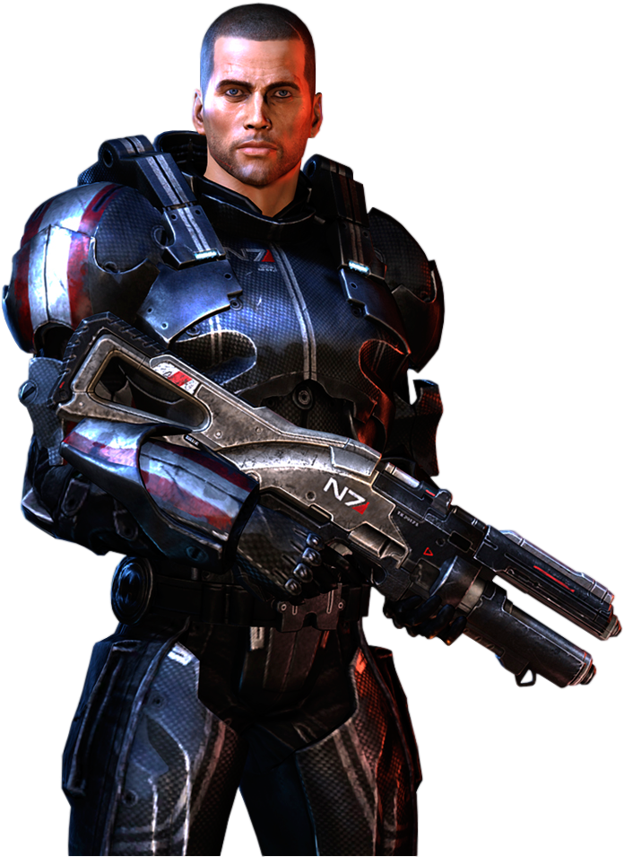

Commander
Shepard
Shepard was born on April 11, 2154,[1] is a graduate of the Systems Alliance N7 special forces program (service no. 5923-AC-2826), a veteran of the Skyllian Blitz, and is initially assigned to the SSV Normandy in 2183 as Executive Officer. Shepard later becomes the first human to join the Spectres, an elite special task force for the Citadel Council.
Read More
